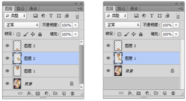

图层的基本操作
图层的基础知识
认识“图层”面板
“图层”面板是用于创建、编辑和管理图层以及图层样式的一种直观的“控制器”。在“图层”面板中，图层名称的左侧是图层的缩览图，它显示了图层中包含的图像内容，而缩览图中的棋盘格代表图像的透明区域。
了解图层的类型
Photoshop 中有很多种类型的图层，如视频图层、智能对象图层、3D 图层等，而每种图层都有不同的功能和用途； 也有处于不同状态的图层，如选中状态、锁定状态、链接状态等，当然它们在“图层”面板中的显示状态也不相同。
新建图层
创建普通图层
在“图层”面板底部单击“创建新图层”按钮，即可在当前图层的上一层新建一个图层。
通过拷贝创建图层
按 Ctrl+J 快捷键，可以将当前图层复制一份。
拷贝剪切练习
创建纯色填充图层
纯色填充图层可以用一种颜色填充图层，并带有一个图层蒙版。 执行“图层 > 新建填充图层 > 纯色”命令。在“新建图层”对话框中设置好相关选项以后，单击“确定”按钮，打开“拾取实色”对话框。然后拾取一种颜色，单击“确定”按钮后即可创建一个纯色填充图层。
创建渐变填充图层
渐变填充图层可以用一种渐变色填充图层，并带有一个图层蒙版。执行“图层 > 新建填充图层 > 渐变”命令，在“新建图层”对话框中设置好相关选项以后，单击“确定”按钮，打开“渐变填充”对话框，在该对话框中可以设置渐变的颜色、样式、角度和缩放等，单击“确定”按钮后即可创建一个渐变填充图层。
创建图案填充图层
图案填充图层可以用一种图案填充图层，并带有一个图层蒙版。执行“图层 > 新建填充图层 > 图案”命令，在“新建图层”对话框中设置好相关选项以后，单击“确定”按钮，打开“图案填充”对话框，在该对话框中可以选择一种图案，并且可以设置图案的缩放比例等，单击“确定”按钮后即可创建一个图案填充图层。
图层的基本操作
选择/取消选择图层
选择多个连续的图层
先选择位于连续图层顶端的图层，然后按住 Shift 键单击位于连续图层底端的图层，即可选择这些连续的图层
选择多个非连续的图层
选择其中一个图层，然后按住 Ctrl 键单击其他图层的名称。
选择所有图层
执行“选择 > 所有图层”命令或按 Alt+Ctrl+A 组合键。使用该命令只能选择“背景”图层以外的图层，如果要选择包含“背景”图层在内的所有图层，可以按住 Ctrl 键单击“背景”图层的名称。
在画布中快速选择某一图层
当画布中包含很多相互重叠的图层，难以在“图层”面板中进行辨别时，可以在使用“移动工具”状态下右击目标图像的位置，在显示出的当前重叠图层列表中选择需要的图层。
快速选择链接的图层
如果要选择链接的图层，可以先选择一个链接图层，然后执行“图层 > 选择链接图层”命令。
取消选择图层
如果不想选择任何图层，可以执行“选择 > 取消选择图层”命令。另外，也可以在“图层”面板最下面的空白处单击，即可取消选择所有图层。
调整图层的排列顺序
如果要改变图层的排列顺序，可以将该图层拖拽到另外一个图层的上面或下面。
使用图层组管理图层
创建图层组
单击“图层”面板底部的“创建新组”按钮，即可在“图层”面板中创建新的图层组。也可以从图层建立图层组。首先在“图层”面板中按住Alt 键选择需要的图层，然后单击并拖拽至“新建组”按钮上。
复制图层
选择要进行复制的图层，然后在其名称上单击鼠标右键，接着在弹出的菜单中选择“复制图层”命令，此时弹出“复制图层”对话框，单击“确定”按钮即可。
删除图层
如果要快速删除图层，可以将其拖拽到“删除图层”按钮 上，也可以直接按 Delete 键。）执行“图层 > 删除 > 隐藏图层”命令，可以删除所有隐藏的图层。
显示与隐藏图层/图层组
图层缩览图左侧的图标可用来控制图层的可见性

链接图层与取消链接
选择需要进行链接的图层（两个或多个图层）。然后执行“图层 > 链接图层”命令或单击图 层面板底部的“链接图层”按钮 ，可以将这些图层链接起来。
修改图层的名称与颜色
在图层较多的文档中，修改图层名称及其颜色有助于快速找到相应的图层。执行“图层 > 重命名图层”命令，或在图层名称上双击，激活名称文本框，然后输入名称，也可以修改图层名称。
更改图层颜色也是一种便于快速找到图层的方法，在图层上单击右键，在弹出菜单的下半部分可以看到多种颜色名称，单击其中一种即可更改当前图层前方的色块效果，选择“无颜色”即可去除颜色效果。
锁定图层
在“图层”面板的上半部分有多个锁定按钮，锁定按钮主要用来保护图层透明区域、图像像素和位置的锁定功能， 使用这些按钮可以根据需要完全锁定或部分锁定图层，以免因操作失误而对图层的内容造成破坏。
栅格化图层内容
文字图层、3D 图层、形状图层、矢量蒙版图层或智能对象等包含矢量数据的图层是不能够直接进行编辑的，所以需要先将其栅格化以后才能进行相应的编辑。选择需要栅格化的图层。然后执行“图层 > 栅格化”菜单下的子命令，可以将相应的图层栅格化。或者在“图层”面板中选中该图层并单击右键执行栅格化命令。
对齐与分布图层
对齐图层
在“图层”面板中选择多个图层，然后执行“图层 > 对齐”菜单下的子命令，可以将多个图层进行对齐。
将图层与选区对齐
当画面中存在选区时，选择一个图层，执行“图层 > 将图层与选区对齐”命令，在子菜单中即可选择一种对齐方法，所选图层即可以选择的方法进行对齐。
分布图层
当一个文档中包含多个图层（至少为 3 个图层，且“背景”图层除外）时，执行“图层 > 分布”菜单下的子命令可将这些图层按照一定的规律均匀分布。
使用图层组管理图层
将图层移入或移出图层组
1、选择一个或多个图层，然后将其拖拽到图层组内，就可以将其移入到该组中。
2、将图层组中的图层拖拽到组外，就可以将其从图层组中移出。
自动对齐与自动混合
自动对齐图层
说明
利用“自动对齐图层”命令，可以根据不同图层中的相似内容（如角和边）自动对齐图层。
很多时候为了节约成本，拍摄全景图像时经常需要拍摄多张图片，然后在后期软件中进行接接。
操作方法：执行“编辑>自动对齐图层”命令
- “全景图”：将重叠的图层混合成全景图。
- “堆叠图像”：混合每个相应区域中的最佳细节。该选项最适合于已对齐的图层。
自动对齐图层练习
自动混合图层
说明
自动混合图层”命令，仅适用 于RGB或灰度图像，不适用于智能对象、视频图层、3D图层、或背景图层。
选择两个或两个以上的图层，然后执行“编辑>自动混合图层”命令，打开“自动混合图层”对话框，设置合适的混合方式，即可将多个图层进行混合。
自动混合图层练习
合并与盖印图层
合并图层
如果要将多个图层合并为一个图层，可以在“图层”面板中选择要合并的图层，然后执行“图层 > 合并图层”命令或按 Ctrl+E 组合键，合并以后的图层使用上面图层的名称。
向下合并图层
执行“图层 > 向下合并”命令或按 Ctrl+E 组合键，可将一个图层与它下面的图层合并。合并以后的图层使用下面图层的名称。

合并可见图层
执行“图层 > 合并可见图层”命令或按 Ctrl+Shift+E 组合键，可以合并“图层”面板中的所有可见图层。
拼合图像
执行“图层 > 拼合图像”命令可以将所有图层都拼合到“背景”图层中。如果有隐藏的图层，则会弹出一个提示对话框，提醒用户是否要扔掉隐藏的图层。
盖印图层
盖印是一种合并图层的特殊方法，可以将多个图层的内容合并到一个新的图层中，同时保持其他图层不变。盖印图层在实际工作中经常用到，是一种很实用的图层合并方法。
- 向下盖印图层：选择一个图层，然后按
Ctrl+Alt+E组合键，可以将该图层中的图像盖印到下面的图层中，原始图层的内容保持不变。 - 盖印多个图层：选择多个图层并使用盖印图层快捷键
Ctrl+Alt+E，可以将这些图层中的图像盖印到一个新的图层中，原始图层的内容保持不变。 - 盖印可见图层：按
Ctrl+Shift+Alt+E组合键，可以将所有可见图层盖印到一个新的图层中。 - 盖印图层组：选择图层组，然后使用快捷键
Ctrl+Alt+E，可以将组中所有图层内容盖印到一个新的图层中，原始图层组中的内容保持不变。
智能对象图层
说明
在Photoshop中，智能对象可以看作嵌入当前文件的一个独立文件，它可以包含位图，也可以包含Illustrator中创建的矢量图形。而且在领回过程中不会破坏智能对象的原始数据，因此对智能对象图层所执行的操作都是非破坏性操作。